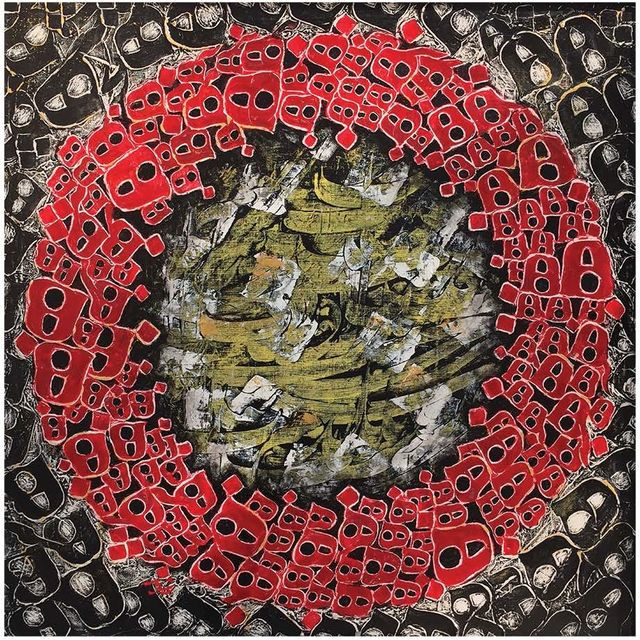
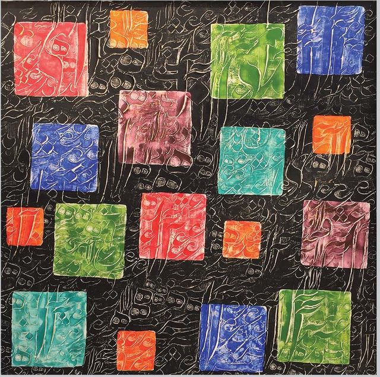
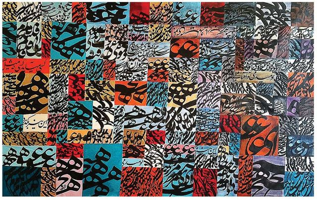
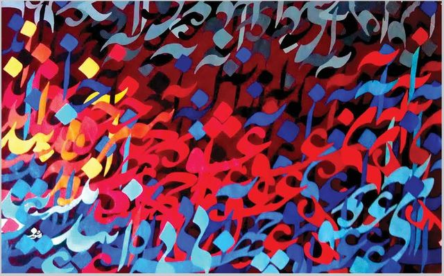

Works5 artworks









History of experienceBiography · education · exhibitions · awards
Activities
- Calligraphy, Painting, Teaching, Art Research, Author
Education
- Master in Art
Solo exhibitions
- 2014Shokouh Art Gallery|Tehran – Iran
- 2013Imam Khomeini Art Gallery|Zanjan – Iran
- 2012Shokouh Art Gallery|Tehran – Iran
- 1998Mashgh-e-Eshgh (VII), (Practice of Love): Imam Khomeini Art Gallery|Zanjan – Iran
- 1996Mashgh-e-Eshgh (VI), (Practice of Love): Imam Khomeini Art Gallery|Zanjan – Iran
- 1995Mashgh-e-Eshgh (V), (Practice of Love): Amir Kabir Art Gallery|Tehran – Iran
- 1994Mashgh-e-Eshgh (IV), (Practice of Love): Khaneh-e-Aftab Art Gallery|Tehran – Iran
- 1992Mashgh-e-Eshgh (Ill, (Practice of Love): Imam Khomeini Art Gallery|Zanjan – Iran
- 1992Mashgh-e-Eshgh (II), (Practice of Love): Khaneh-e-Aftab Art Gallery|Tehran – Iran
- 1991Mashgh-e-Eshgh (l), (Practice of Love): Sohrevardy Art Gallery|Zanjan – Iran
Awards, Festivals & Exhibitions
- 2015Visual Arts Group Exhibition, East Arts Museum|Rome-Italy
- 2014Visual Arts Group Exhibition, Mojhdeh Art Gallery|Kerman – Iran
- 2013Visual Arts Group Exhibition Seyhoun Art Gallery|Tehran – Iran
- 2013Calligraphy Group Exhibition, Nicolas Flamel Art Gallery|Paris-France
- 2013Visual Arts Group Exhibition Shokouh Art Gallery|Tehran – Iran
- 2011A Review Of Half Century Of Iranian Contemporary Calligraphy "Naghashikhat", Group Exhibition
- 2011Tehran Museum Of Contemporary Arts|Tehran – Iran
- 2004Published Artwork in "Sarmashq" (Catalog), International Meeting of Calligraphy in the Islamic Word, the section of new trends in Calligraphy, Ministry of Culture and Islamic Guidance|Tehran – Iran
- 1996–1998First Award of Calligraphy, "Nastaliq" style|Zanjan – Iran, (for three consecutive years)
- 1996–1997Judgment on Calligraphy Festival|Zanjan – Iran
- 1996Judgment on Calligraphy Festival, Red Crescent Youth Organization|Zanjan – Iran
Books & Paper
- Author of Learning Calligraphy, Edition 2001-2015 for Graphic, Handicraft, Printing and calligraphy students for all governmental and non-governmental schools and collages in Iran this book is also source for art university entrance exams.
- Author has paper in art fields as calligraphy, calligraphic painting, and some reviews so that gazette in famous press, as: Calligraphy, edition 2001 for Graphic, Handicraft, Printing and calligraphy students for all governmental and non-governmental schools and colleges in Iran.
- 2004Art Criticism about Calligraphy and "Naghashikhat" (Contemporary Calligraphy), Art Magazine
- 2002Calligraphy Today, International Meeting Of Calligraphy in Islam World
- 2000Necessity of Reviewing and Explaining Calligraphy Teaching, Hamshahry Newspaper
- 1999REVIEW AND EXPLAIN OF WHY STUDENTS ARE NOT PENMANSHIP, Penmanship Book, Iran Educational System
- 1999NEW THEORY ABOUT ARTS ASPECT OF CALLIGRAPHY, Hamshahry Newspaper
- 1999WORSHIP FINGERS QUIDDITY, Art Magazine
- 1996CALLIGRAPHY ART BEYOND PENMANSHIP, Hamshahry Newspaper
Source: the Sobhan Gallery artist catalogue “Esmaeil Rashvand.pdf”.